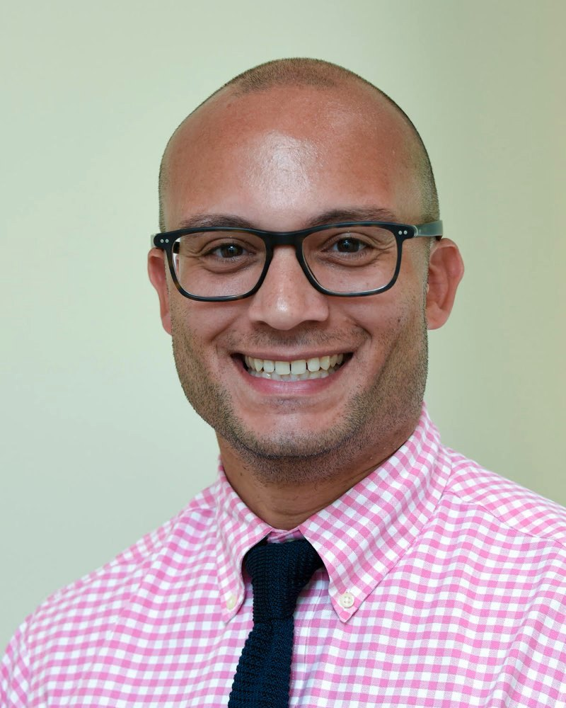

Cardiologist in Miami & Doral
Advanced heart & vascular care, led by an interventional cardiologist.
From routine heart evaluations and advanced testing to minimally invasive treatment of blocked arteries and vein disease, in our offices in Miami and Doral.
Se habla español · Monday to Friday
Our expertise
Care for your heart, arteries and veins
From routine heart evaluations to complex circulation problems, coordinated cardiovascular care in one practice.
Heart care
Chest pain, coronary disease, heart failure, rhythm problems, prevention and cardiac testing.
Learn moreLeg circulation & PAD
Leg pain when walking, poor circulation and blocked leg arteries, including angioplasty and stenting.
Learn moreVein treatment
Varicose veins, venous insufficiency and leg swelling, treated with ablation or Varithena.
Learn moreBefore surgery
Preoperative cardiac evaluation, including for plastic and cosmetic procedures.
Learn more
Meet your physician
New York training. Miami practice.
Dr. Valerio is board certified in both cardiovascular disease and interventional cardiology, and treats the heart, arteries and veins in one practice.
After training in New York, he moved to Miami in 2018 and founded 4 Chambers Cardiology in 2020. A native Spanish speaker, he sees patients in English and Spanish.
- Board certification
- Cardiovascular Disease
- Board certification
- Interventional Cardiology
- Fellow
- American College of Cardiology
- Medical school
- SUNY Downstate College of Medicine
Valerie Valerio, APRN, DNP
Nurse practitioner with a Doctor of Nursing Practice. Sees patients for consultations and follow-up at our main office.
Full training and education
- Medical school: SUNY Downstate College of Medicine, Brooklyn, NY
- Residency: Internal Medicine, NewYork-Presbyterian/Columbia, New York, NY
- Fellowship: Cardiology, Westchester Medical Center, Valhalla, NY
- Fellowship: Interventional Cardiology, Lenox Hill Hospital, New York, NY
Valerie Valerio studied at Boston University and completed her nursing and advanced practice nursing education at Sacred Heart University in Fairfield, Connecticut.
Advanced vascular care
Leg pain or poor circulation? We can help.
Pain when you walk, wounds that won't heal, or changes in the color or temperature of your feet can be signs of peripheral artery disease.
- Calf or hip pain when walking
- A foot wound that isn't healing
- Foot pain at night or at rest
- Cold, numb or discolored toes
Physicians: refer a vascular or wound patient
Cardiac testing & treatment
Answers close to home.
Most testing is done in our own offices and reviewed by your cardiologist, so you get results and a plan without bouncing between facilities.
From advanced cardiac imaging to catheter-based procedures, we coordinate with other specialists whenever your care calls for it.
Echocardiography
Pumping strength and valves, by ultrasound.
Stress testing
Treadmill, nuclear (SPECT) and cardiac PET.
Vascular ultrasound & ABI
Leg arteries and veins, carotid, renal and aorta.
Rhythm monitoring
ECG, heart monitors, pacemaker and defibrillator checks.
Catheter procedures
Cardiac catheterization and stenting; peripheral angioplasty.
Cardioversion & labs
Rhythm restoration under sedation; blood work in the office.
Conditions we treat
- Coronary artery disease and chest pain
- Shortness of breath and heart failure
- Palpitations and irregular heartbeat
- Fainting and dizziness
- High blood pressure and cholesterol
- Heart valve disease and murmurs
- Peripheral artery disease (PAD)
- Varicose veins and venous insufficiency
- Leg swelling
- Carotid artery disease
- Abdominal aortic aneurysm screening
Our locations
Three offices, one number.
Call 305.856.1064 for any location.
Main office
4100 SW 57th AveMiami, FL 33155
Consultations, echocardiograms, vascular ultrasound, stress tests, device checks and labs.
DirectionsCardiac imaging office
815 NW 57th Ave, Suite 100Miami, FL 33126
Nuclear stress testing and cardiac PET, plus consultations.
DirectionsDoral procedure center
7725 NW 48th St, Suite 100Doral, FL 33166
Catheterization, peripheral angiography and intervention, and vein procedures.
DirectionsSchedule your visit.
Your heart and vascular health deserve expert care. Our team will find the right office and time for you.
New patient information
- Photo ID and your insurance card
- Your medications, or a current list with doses
- Recent test results or hospital records, if you have them
- Your referral, if your plan requires one
- Your surgeon's name and fax number, if you're coming before surgery
Plan on about 30 minutes for a first visit, longer if testing is scheduled.
Insurance and payment
We verify your coverage and copay before your appointment, and copays are collected at check-in. We accept Medicare and these plans:
- Aetna
- Ambetter
- AvMed
- CarePlus
- Cigna
- Devoted Health
- Doctors HealthCare Plans
- Florida Blue
- Humana
- Medica
- Oscar
- Solis Health Plans
- UnitedHealthcare, including AARP and Preferred Care Partners
- Wellcare
- WellMed
Networks change from year to year, so we confirm your plan before every visit. Self-pay visits are available; ask for pricing when you call.
Preparing for testing
Our staff will go over your instructions when your test is booked, including what to eat, whether to avoid caffeine, and which medications to hold. For a stress test, wear comfortable clothes and walking shoes.
Referring physicians
Fax demographics, insurance, the clinical question and recent results. Vascular and wound referrals are welcome.
Fax 305.856.0644
Questions about a patient: 305.856.1064
En español
4 Chambers Cardiology es el consultorio del Dr. Marcos Valerio, cardiólogo intervencionista. Atendemos enfermedades del corazón, de las arterias y de las venas en nuestras oficinas de Miami y Doral. El Dr. Valerio y nuestro personal hablan español. Llame al 305.856.1064.